15 Proteiners felveckning – Alzheimer och ALS
Alzheimers sjukdom, Parkinsons sjukdom och ALS är mycket olika sjukdomar. Den första tar bort minnet, den andra gör rörelserna stela och darriga, och den tredje försvagar musklerna tills den drabbade inte längre kan röra sig. Många har mött dem i sin närhet. Många minns också nyhetsankaret Ulla-Carin Lindquist, som berättade öppet om sitt liv med ALS innan hon dog 2004.
Ändå har sjukdomarna något gemensamt på molekylär nivå. I alla tre hittar man, när man undersöker nervvävnaden i mikroskop, klumpar och fibrer av proteiner som inte borde finnas där. Det gäller också flera andra sjukdomar, bland annat galna ko-sjukan och den ärftliga Skelleftesjukan i norra Sverige. Proteinerna är olika i varje sjukdom, men mekanismen liknar varandra: ett protein veckar sig fel och klumpar ihop sig.
Därför kan kunskap om en av sjukdomarna hjälpa till att förstå de andra. Redan 2006 skrev Mikael Oliveberg i Forskning & Framsteg att ALS kan ge kunskap om Alzheimer och Parkinson: olika sjukdomar, men samma orsak, felveckade proteiner. Det är också tanken bakom det här kapitlet, som handlar om vad som händer när proteinveckningen går fel, och vad forskningen, särskilt om ALS, har lärt oss om hur sjukdomarna uppstår och sprider sig. Mycket är känt, men mycket är fortfarande oklart. Det finns behandlingar som kan bromsa några av sjukdomarna, men ännu inga som botar dem.
15.1 Många sjukdomar, samma grundorsak
Tabellen nedan visar några av sjukdomarna och vilket protein som klumpar ihop sig i var och en av dem (Tabell 15.1).
| Sjukdom | Protein som klumpar ihop sig | Var |
|---|---|---|
| Alzheimers sjukdom | amyloid-beta (Aβ) och tau | hjärnan |
| Parkinsons sjukdom | α-synuklein (alfa-synuklein) | hjärnan |
| ALS | bland annat SOD1 | ryggmärgen och hjärnan |
| Prionsjukdomar, t.ex. Creutzfeldt-Jakobs sjukdom | prionprotein (PrP) | hjärnan |
| Skelleftesjukan | transtyretin (TTR) | nerver, hjärta och andra organ |
Gemensamt för sjukdomarna är att ett protein som normalt är lösligt omvandlas till olösliga klumpar. Ofta består klumparna av långa, tunna fibrer som kallas amyloid. Ordet betyder “stärkelselik” och kommer från 1800-talet, då man trodde att avlagringarna bestod av stärkelse. Stora ansamlingar av amyloid i vävnaden kallas plack.
För de flesta av sjukdomarna gäller att de inte smittar mellan människor i vardagen. Prionsjukdomarna är ett undantag, men även de är mycket sällsynta och sprids bara på speciella sätt, som vi ska se.
15.2 Veckning och felveckning
Som vi såg i Kapitel 14 viker en proteinkedja ihop sig så att de vattenskygga aminosyrorna hamnar i en kärna i mitten. Men proteinet är bara nätt och jämnt stabilt. Hela tiden är en liten andel av molekylerna oveckade, och i de oveckade kedjorna ligger de vattenskygga delarna öppna. Då kan de fastna i andra kedjor i stället för att vecka sig rätt. Det kallas felveckning (Figur 15.1).
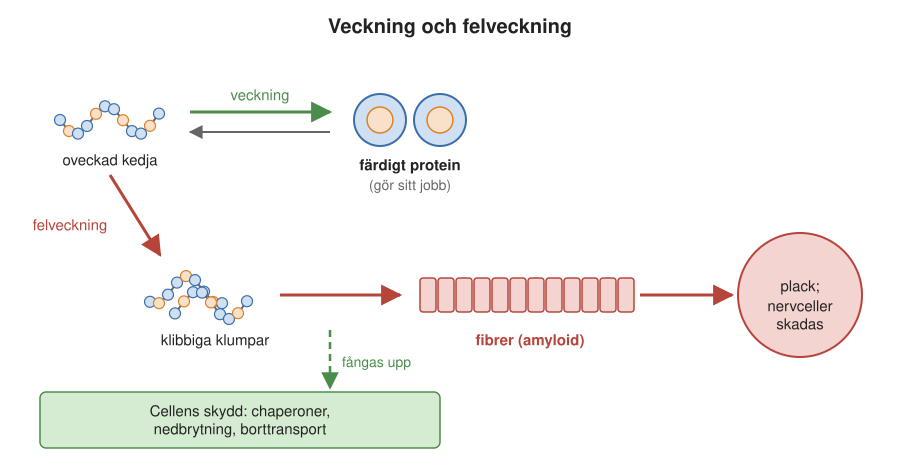
I friska celler är felveckning inget ovanligt. Cellen har ett helt skyddssystem som tar hand om felveckade proteiner: chaperoner som hjälper kedjor att vecka sig rätt eller vecklar upp dem igen (se Kapitel 13), och system som märker ut och bryter ned felveckade proteiner. Sjukdom uppstår när felveckningen blir mer än skyddssystemen klarar av.
Amyloid: ett protein som blivit kristall
När felveckade kedjor klumpar ihop sig bildar de ofta amyloida fibrer, och de har en mycket regelbunden byggnad. Varje proteinkedja sträcks ut till ett eller flera platta band, och banden från många kedjor läggs ovanpå varandra, som sidorna i en lång bunt papper. Varje kedja hålls fast vid kedjan ovanför och under sig av vätebindningar. Så bildas ett jättelikt flak som kan bli tusentals kedjor långt. Två sådana flak ligger tätt mot varandra, och deras vattenskygga aminosyror passar in i varandra som blixtlåsets tänder (Figur 15.5).
Det är samma krafter som vid normal veckning, “fett dras till fett och vätebindningarna matchas”, men nu mellan olika kedjor i stället för inom en och samma. En fiber liknar på det sättet en kristall, som växer genom att nya byggstenar läggs till i ändarna, ungefär som när iskristaller växer på en fönsterruta.
Fibrerna är mycket stabila och mekaniskt starka, och svåra för cellen att bryta ned. De kan också bildas av många olika proteiner som inte har något med varandra att göra. Förmågan att bilda amyloid verkar alltså vara en egenskap som nästan alla proteinkedjor har, men som de normalt skyddas från genom att vara veckade.
15.3 Hur fibrer växer
Fibrer bildas inte i jämn takt. Först händer ingenting, sedan går det allt fortare. Hur det går till förklarar mycket av hur sjukdomarna fortskrider i kroppen.
Förloppet kan man följa i provrör. Man använder ett färgämne som lyser upp när det binder till amyloida fibrer, och kan på så sätt följa hur mängden fibrer ökar med tiden. Med ALS-proteinet SOD1 (Avsnitt 14.3) händer först ingenting alls, ibland i många timmar. Sedan tar fiberbildningen fart, ökar snabbt och planar ut när det mesta av proteinet har blivit fibrer (Figur 15.2).
Försöken visar också att det är de oveckade SOD1-kedjorna som bildar fibrerna. Ju mindre stabilt proteinet är, desto större är andelen oveckade kedjor och desto lättare bildas fibrer.
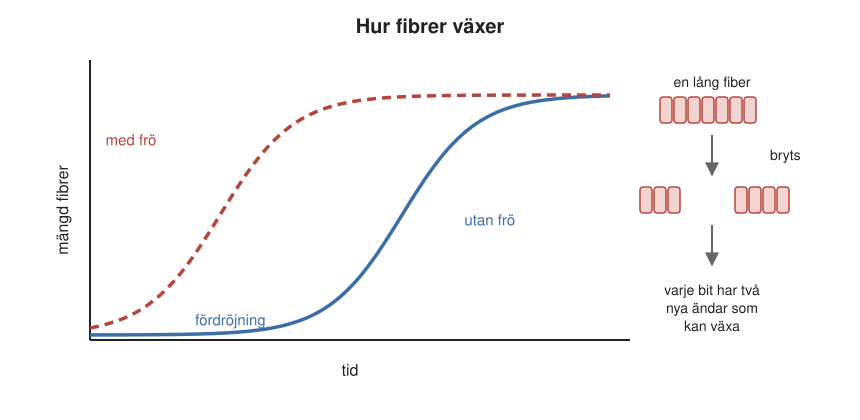
Varför fördröjningen? Det är svårt att bilda den allra första lilla fiberbiten, en kärna (inte att förväxla med den vattenskygga kärnan inne i ett veckat protein), eftersom några oveckade kedjor måste råka hitta varandra i precis rätt läge. Men när en kärna väl finns kan nya kedjor lätt läggas till i dess ändar. Om man tillsätter en liten mängd färdiga fibrer, så kallade frön, behöver ingen ny kärna bildas, och fördröjningen försvinner. Det kallas ympning (eng. seeding).
Men varför går det sedan så fort? Ledtråden är ett överraskande fynd: SOD1 bildar i provröret bara fibrer om lösningen skakas. Utan skakning händer nästan ingenting. Förklaringen är att fibrerna växer snabbast när de bryts sönder. Varje gång en fiber går av, så kallad fragmentering, bildas två nya ändar som båda kan växa. Fler ändar ger fler växande fibrer, som i sin tur bryts av, och så vidare. Mängden ökar då exponentiellt, som ränta på ränta. Som vi ska se verkar samma sak hända i kroppen.
15.4 Alzheimers sjukdom
Den mest kända av sjukdomarna är Alzheimers sjukdom, i dag den vanligaste orsaken till demens. Vid den finns proteinklumpar av två slag, både mellan och inuti nervcellerna.
Den tyske läkaren Alois Alzheimer beskrev 1906 en kvinna, Auguste Deter, som i femtioårsåldern hade fått allt svårare med minnet och blivit förvirrad (Figur 15.3). När hon dog undersökte han hennes hjärna i mikroskop och fann två sorters avvikelser: plack mellan nervcellerna och trassliga trådar, nystan, inuti nervcellerna (Figur 15.4).
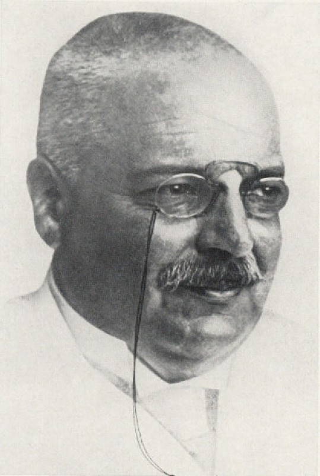
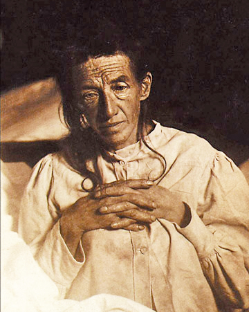
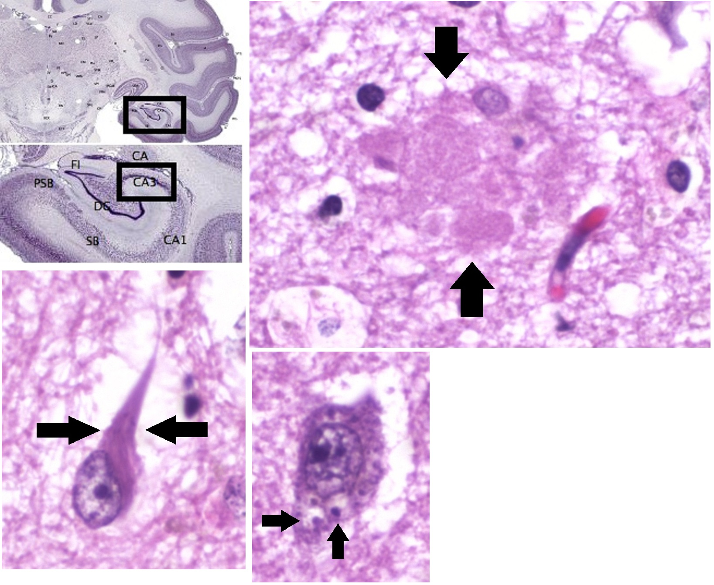
Placken består framför allt av ett litet protein, amyloid-beta, ofta förkortat Aβ. Det är en bit av ett större protein, APP, som sitter i nervcellernas membran och som normalt har uppgifter i nervcellernas tillväxt och reparation (Figur 15.5). Enzymer i membranet klipper APP i bitar. Den del som blir Aβ, omkring 40 aminosyror lång, sitter delvis inne i membranets vattenskygga mitt. När den klipps loss blir den därför ett vattenskyggt fragment som inte hör hemma i vatten. Precis som de oveckade kedjorna ovan söker fragmenten varandra. De klibbar ihop till fibrer som samlas mellan nervcellerna.
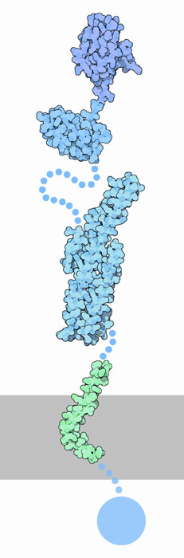
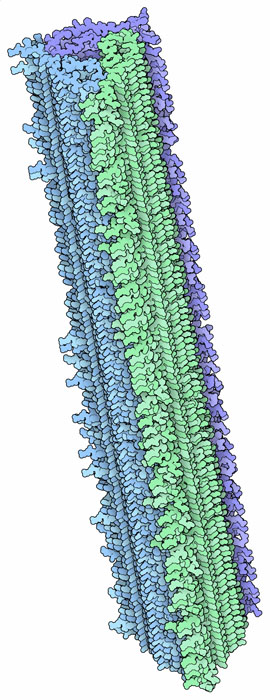
Varför det bildas för mycket Aβ, eller för lite av det bryts ned, hos de flesta som får sjukdomen vet man inte säkert. Hos en liten grupp familjer finns ärftliga former av Alzheimers sjukdom, som ofta debuterar tidigt. De beror på mutationer i APP eller i delar av enzymerna som klipper APP, och de ökar bildningen av Aβ eller av särskilt klibbiga varianter av det. Hos de allra flesta drabbade är den största riskfaktorn i stället hög ålder.
Det andra kännetecknet, nystanen, består av proteinet tau, som normalt hjälper till att stabilisera nervcellernas inre skelett. Hur Aβ och tau samverkar när sjukdomen utvecklas är ett aktivt forskningsområde.
Under de senaste åren har läkemedel i form av antikroppar som binder till Aβ och hjälper kroppen att röja undan placken godkänts i flera länder, bland annat inom EU. De kan bromsa sjukdomsförloppet något hos personer i ett tidigt skede, men de botar inte sjukdomen, och de kan ha allvarliga biverkningar. I Sverige har NT-rådet, som ger regionerna råd om nya läkemedel, hittills avrått från att använda dem i vården, eftersom nyttan bedöms som liten i förhållande till risker och kostnad. Att de alls har effekt stödjer ändå tanken att proteinklumparna har en central roll.
15.5 Parkinsons sjukdom
Parkinsons sjukdom följer samma mönster, men med ett annat protein. Vid sjukdomen dör nervceller i ett litet område djupt inne i hjärnan, som tillverkar signalämnet dopamin och som behövs för att styra rörelser. I de skadade nervcellerna finns runda klumpar, Lewykroppar, som till stor del består av proteinet α-synuklein (Figur 15.6). Det är ett litet protein som normalt saknar fast form och som finns vid nervcellernas kontaktpunkter. Precis som Aβ kan det bilda amyloida fibrer.
Kopplingen till sjukdomen stärks av de ärftliga fallen: några ärftliga former av Parkinsons sjukdom beror på mutationer i α-synuklein eller på att cellen tillverkar för mycket av det.
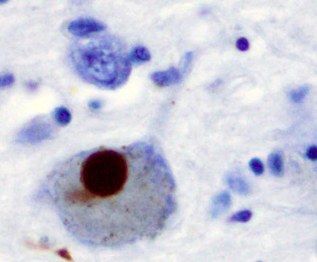
15.6 Prioner: smittsamma proteiner
Den mest uppseendeväckande gruppen av proteinsjukdomar är prionsjukdomarna, eftersom de kan smitta. Vägen till att förstå dem är en av medicinens märkligaste upptäcktshistorier. Den började med sjuka får och med ett litet folk i Nya Guineas högland.
Kuru: skakningssjukan på Nya Guinea
Hos får har man sedan 1700-talet känt till sjukdomen scrapie, där djuren blir ostadiga, kliar sig mot staket och träd och till sist dör. Ingen visste vad som orsakade den.
I början av 1950-talet kom australiska patrullofficerare i kontakt med folket fore i östra delen av Nya Guineas högland (Figur 15.7). De rapporterade om en sjukdom som folket själva kallade kuru, av ett ord som betyder att skaka eller darra. Den som drabbades fick först svårt att gå och började darra. Efter några månader kunde den sjuke varken stå eller sitta utan hjälp (Figur 15.8), och inom ungefär ett år var han eller hon död. Omkring 1957 dog ungefär 200 människor om året i kuru, i ett litet folk där kuru var den vanligaste dödsorsaken bland kvinnorna. Sammanlagt har omkring 2 700 människor dött i sjukdomen.
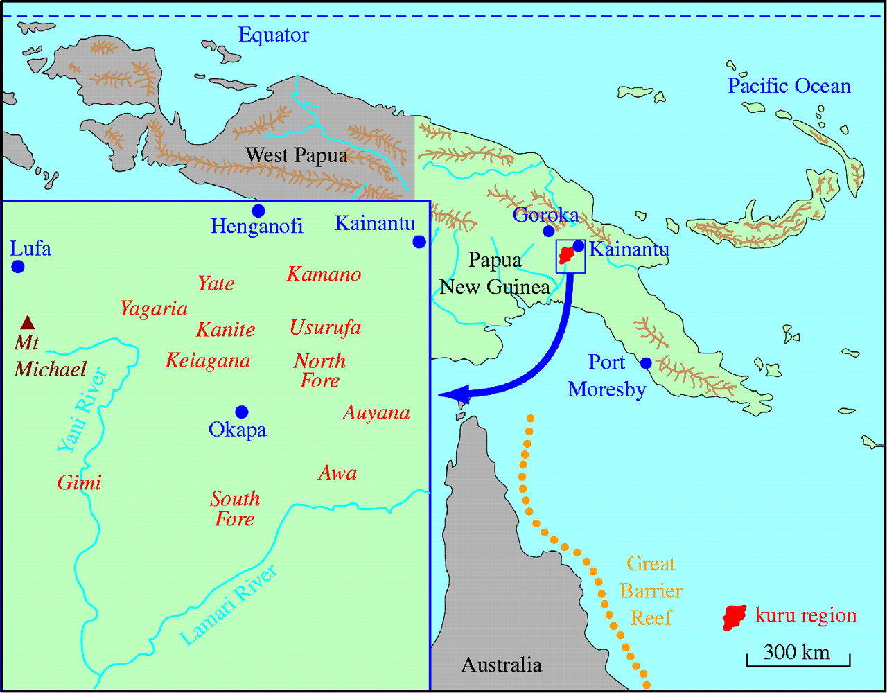
Läkaren Vincent Zigas, som arbetade i området, och den amerikanske läkaren och forskaren Carleton Gajdusek (Figur 15.9) beskrev sjukdomen för den medicinska världen 1957. De trodde först att den var ärftlig, eftersom den drabbade vissa släkter mer än andra. Men något stämde inte: kuru drabbade nästan bara kvinnor och barn, och sällan vuxna män.
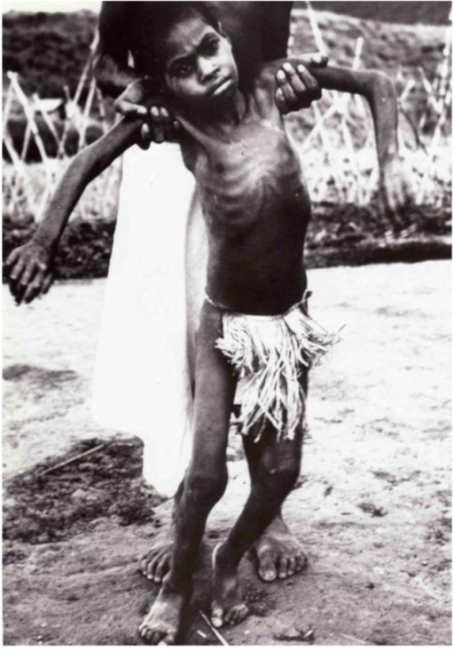
Förklaringen kom från antropologer, bland andra Shirley Lindenbaum och Robert Glasse, som studerade fore-folkets seder. När någon dog åt de anhöriga upp den döda vid begravningen, som ett sätt att visa respekt och kärlek. Kvinnorna och barnen fick hjärnan och de inre organen, medan männen oftare åt muskler. Det var alltså hjärnan som förde sjukdomen vidare. Australiska myndigheter och missionärer förbjöd seden, och omkring 1960 hade den i stort sett upphört. Efter det insjuknade inga barn som var födda senare, och kuru blev ovanligare år för år.
Ändå dröjde det länge innan sjukdomen försvann helt. Tiden från smitta till sjukdom var i genomsnitt omkring 14 år, men kunde vara mer än 50 år. Den sista kända personen med kuru dog 2009. Hos fore-folket har man dessutom hittat en ovanlig variant av prionproteinet, där en enda aminosyra är utbytt (glycin mot valin i position 127), och den skyddar mot sjukdomen. Varianten har troligen blivit vanligare just för att dess bärare överlevde epidemin, ett exempel på naturligt urval hos människor i vår egen tid.
Smitta utan arvsmassa
År 1959 såg den amerikanske veterinären William Hadlow en utställning i London om kuru, med bilder av hjärnor från personer som dött i sjukdomen. Han kände genast igen dem: hjärnorna var fulla av små hål, precis som hjärnorna hos får med scrapie. I ett brev till tidskriften The Lancet föreslog han att kuru kanske kunde föras över till försöksdjur, på samma sätt som scrapie.
Gajdusek och hans medarbetare Joe Gibbs och Michael Alpers sprutade in hjärnvävnad från personer som dött i kuru i hjärnan på schimpanser. Efter ungefär två år blev de första schimpanserna sjuka, med samma symtom och samma hål i hjärnan. Resultatet publicerades 1966. Kuru var alltså en smittsam sjukdom, men smittämnet verkade mycket långsamt. Gajdusek kallade det ett “långsamt virus”, och han fick Nobelpriset i fysiologi eller medicin 1976.
Men vad var det som smittade? Smittämnet var gåtfullt. År 1967 visade den brittiska strålningsbiologen Tikvah Alper att smittämnet i scrapie tålde så kraftig strålning, både ultraviolett och joniserande, att allt DNA och RNA borde ha förstörts. Samma år föreslog matematikern John Griffith att smittämnet kanske var ett protein som på något sätt kunde få andra proteiner att anta sin egen form. Idén verkade bryta mot den centrala dogmen (Avsnitt 1.4.2), som säger att informationen går från DNA via RNA till protein, och få tog den på allvar.
Den amerikanske forskaren Stanley Prusiner (Figur 15.9) renade fram smittämnet ur hjärnor från hamstrar med scrapie och fann att det bestod av protein. År 1982 föreslog han att smittämnet bestod enbart av protein och kallade det prion, av engelskans proteinaceous infectious particle. Idén mötte stort motstånd men fick till slut allmänt stöd, och Prusiner fick Nobelpriset i fysiologi eller medicin 1997.
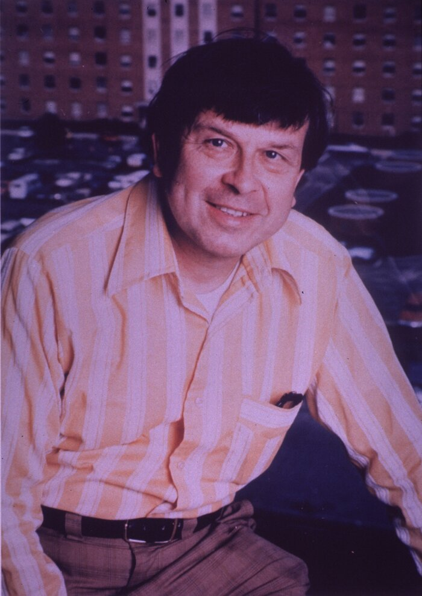
Ett protein som är sin egen mall
Prionproteinet, PrP, finns normalt på ytan av våra nervceller (Figur 15.10). Det sjukdomsframkallande prionet består av exakt samma kedja, men veckad på ett annat sätt och hopklumpad till fibrer. Det farliga är att prionet kan fungera som mall: när ett normalt PrP-protein stöter på fiberns ände kan det tvingas in i samma felveckade form och bli en del av fibern (Figur 15.11). Fibern växer, bryts av, och bitarna blir nya mallar, precis som fibrerna i provröret. På det sättet kan en liten mängd prioner till slut omvandla stora mängder normalt protein.
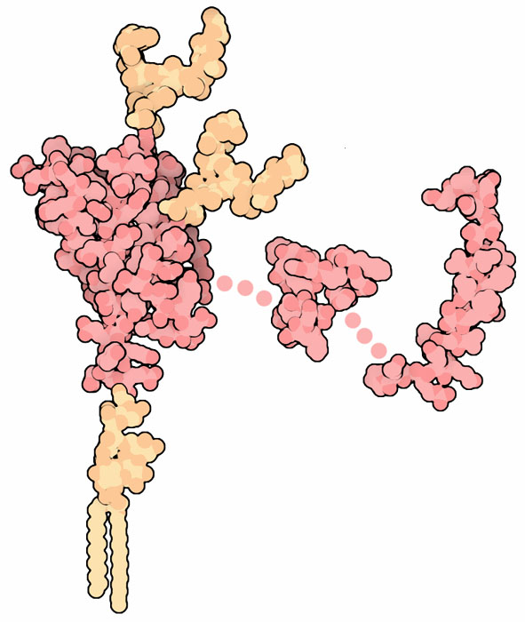
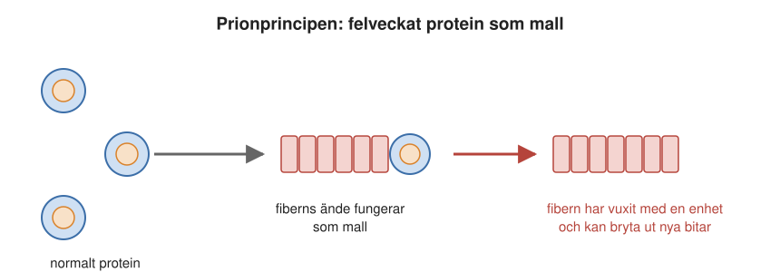
Galna ko-sjukan
Smitta är bara ett av tre sätt som prionsjukdomar kan uppstå på. De kan också uppstå av sig själva och genom ärftliga mutationer i PrP. Den vanligaste prionsjukdomen hos människa, Creutzfeldt-Jakobs sjukdom, uppstår för det mesta av sig själv, utan känd orsak. Den är mycket sällsynt och drabbar ungefär en till två personer per miljon invånare och år. Ärftliga former är ännu ovanligare. En av dem, dödlig familjär sömnlöshet, ger svåra sömnstörningar innan andra symtom uppträder.
Smitta blev uppmärksammad på 1980- och 90-talen, då galna ko-sjukan (BSE) bröt ut bland nötkreatur i Storbritannien (Figur 15.12). Den spreds genom djurfoder som innehöll kött- och benmjöl från slaktade djur. Några år senare började unga människor insjukna i en ny variant av Creutzfeldt-Jakobs sjukdom. Den visade sig komma från att de ätit kött från smittade kor. Sammanlagt har drygt 200 människor i världen fått den nya varianten. Efter förbud mot att utfodra idisslare med kött- och benmjöl och hårda kontroller av slakten har både BSE och den nya varianten blivit mycket sällsynta.
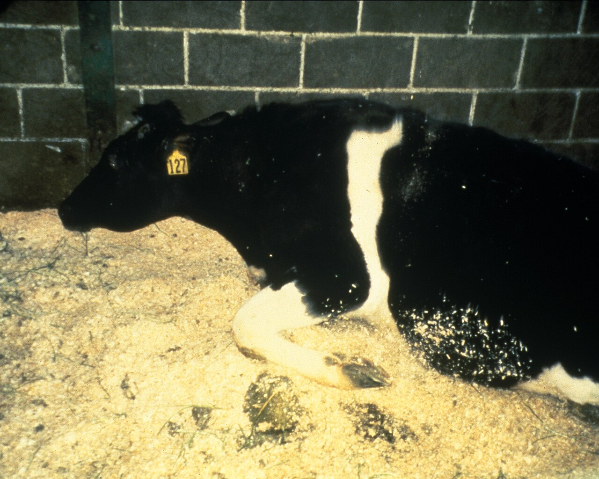
Kan andra amyloider sprida sig?
Om prioner kan sprida sig genom att fungera som mallar, kan då andra amyloida fibrer göra samma sak? I djurförsök har man sett att färdiga fibrer, under vissa förhållanden, kan fungera som frön även i en levande kropp. Det finns en form av amyloidsjukdom hos möss, där ett protein i blodet bildar fibrer i bland annat mjälte och lever. Hos möss som var mottagliga för den sjukdomen kom fibrerna snabbare om mössen fick fibrer från andra källor, till och med fibrer från silke eller från gåslever, som innehåller amyloid. Det betyder inte att någon blir sjuk av att äta gåslever.
Den viktigaste frågan gäller i stället vad som händer inom kroppen. Allt fler försök i djur och celler tyder på att felveckade proteiner vid Alzheimers sjukdom, Parkinsons sjukdom och ALS kan sprida sig från nervcell till nervcell på ett sätt som liknar prioner. Det skulle förklara varför sjukdomarna ofta börjar på ett ställe och sedan breder ut sig gradvis i nervsystemet. Hur stor roll spridningen spelar hos människor är ännu inte klarlagt. Däremot finns det inga tecken på att sjukdomarna smittar mellan människor genom vanlig kontakt.
15.7 Skelleftesjukan
En svensk sjukdom visar särskilt tydligt att det är det felveckade proteinet som orsakar sjukdomen, och att kunskap om proteinets stabilitet kan bli medicin.
Skelleftesjukan, eller ärftlig transtyretinamyloidos, är en ärftlig sjukdom som är ovanligt vanlig i Västerbotten och Norrbotten, särskilt kring Skellefteå och Piteå. Den förekommer också i bland annat Portugal och Japan. Sjukdomen börjar ofta med domningar och värk i händer och fötter, och sedan drabbas bland annat mage, tarmar och hjärta.
Det protein som felveckas är transtyretin (TTR), som tillverkas i levern och transporterar sköldkörtelhormon och A-vitamin i blodet. Normalt sitter fyra TTR-kedjor ihop till en stabil enhet. Vid Skelleftesjukan gör en mutation att enheten lättare faller isär. De lösa kedjorna kan då veckla upp sig och bilda amyloida fibrer, som lagras in i nerver och organ. Sjukdomen ärvs dominant: den som har en förälder med mutationen har 50 procents risk att ärva den. Långtifrån alla som bär på mutationen blir dock sjuka, och varför det är så är inte känt.
Eftersom TTR tillverkas i levern började man på 1990-talet behandla sjukdomen med levertransplantation. Idén till behandlingen ska enligt Forskning & Framsteg ha kommit från en patient. Den nya levern tillverkar normalt TTR, och hos många patienter stannade sjukdomen av eller bromsades. Bilder tagna före och efter transplantationen visade att avlagringarna i kroppen kunde minska kraftigt när det muterade proteinet inte längre tillverkades. Proteinklumpar är alltså inte nödvändigtvis permanenta. Det var också ett tidigt bevis för att det är proteinet själv som orsakar sjukdomen.
I dag finns också läkemedel. Ett av dem binder till TTR och gör fyrkedjeenheten stabilare, så att den inte faller isär (Figur 15.13). Det är ett tydligt exempel på hur kunskap om ett proteins stabilitet kan bli medicin. Andra läkemedel minskar leverns tillverkning av TTR.
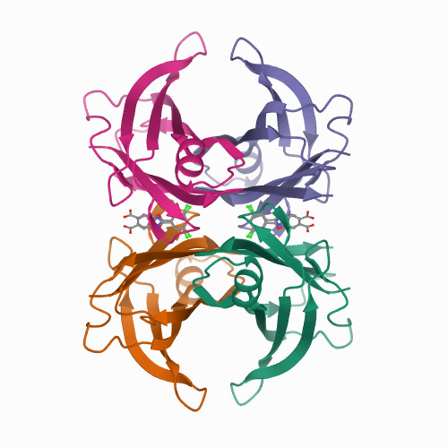
15.8 ALS och SOD1
Resten av kapitlet handlar främst om ALS. Forskningen om proteinet SOD1 har gett en ovanligt detaljerad bild av hur en felveckningssjukdom uppstår och fortskrider.
ALS, amyotrofisk lateralskleros, är en sjukdom där de nervceller som styr musklerna, motorneuronen, dör. Motorneuronen finns i hjärnan och ryggmärgen och sänder signaler ut till kroppens muskler. När de dör förtvinar musklerna, och den drabbade får allt svårare att gå, använda händerna, tala, svälja och till sist andas. Sinnena finns kvar, och tankeförmågan är ofta opåverkad, men en del drabbas också av förändringar i tänkande och beteende. Sjukdomen är ovanlig och debuterar oftast i 50- till 70-årsåldern. Förloppet varierar mycket mellan olika personer, men för många är det bara några år från de första symtomen till döden. En del lever betydligt längre.
Sjukdomen beskrevs av franska läkare redan vid mitten av 1800-talet. En av dem, François-Amilcar Aran, skrev 1848 om en sjukdom i nervsystemet där “muskulaturen förtvinar lite i taget och kan försvinna helt”. Den franske neurologen Jean-Martin Charcot beskrev sjukdomen noggrant från 1869 och gav den på 1870-talet dess namn.
Sjukdomen kan se olika ut. Hos en del börjar den i armarna, hos andra i benen eller i musklerna som styr tal och sväljning. Det har gett upphov till en mängd namn, som “slappa armar-syndromet”.
Omkring en av tio med ALS har en ärftlig form. 1993 upptäckte man att en del av de ärftliga fallen beror på mutationer i genen för SOD1, det enzym som oskadliggör syreradikaler och som vi lärde känna i Avsnitt 14.3. I dag är mer än 200 olika ALS-mutationer i SOD1 kända, och de finns utspridda över hela proteinet. I Sverige och Finland är en särskild mutation, där aminosyra nummer 90 har bytts ut, relativt vanlig. Den brukar kallas D90A.
Vad gör mutationerna?
Länge trodde man att mutationerna skadade SOD1:s förmåga att ta hand om syreradikaler. Men så är det inte. Många muterade varianter fungerar bra som enzym, och möss som helt saknar SOD1 får inte ALS. Problemet är i stället att de muterade proteinerna lättare veckar sig fel och klumpar ihop sig. I ryggmärgen hos ALS-patienter med SOD1-mutation hittar man klumpar av SOD1 inuti motorneuronen.
Flera faktorer påverkar hur lätt SOD1 klumpar ihop sig:
- Stabiliteten. Många mutationer gör proteinet mindre stabilt, så att en större andel av molekylerna är oveckade (Avsnitt 14.2.1).
- Metallerna. Koppar- och zinkjonerna gör det färdiga proteinet mycket stabilt. Mutationer som försämrar metallbindningen gör det skörare.
- Klibbiga delar av kedjan. Vissa delar av SOD1-kedjan har särskilt lätt att bilda fibrer när de ligger fria.
- Laddningen. Som vi såg i Avsnitt 14.5 minskar många ALS-mutationer proteinets negativa laddning, så att molekylerna stöter bort varandra mindre.
Den kunskapen har redan lett till behandling. Sedan några år finns ett läkemedel för just den form av ALS som beror på SOD1-mutationer. Det består av en kort, konstgjord nukleinsyrebit som minskar nervcellernas tillverkning av SOD1. Hos en del patienter kan det bromsa förloppet. Att minska mängden av det felveckningsbenägna proteinet är alltså en framkomlig väg, men det är ingen bot.
15.9 Vad ALS-mössen har lärt oss
Mycket av det vi vet om hur ALS fortskrider kommer från försök med transgena möss, möss som fått en mänsklig SOD1-gen med en ALS-mutation. Mössen utvecklar en sjukdom som liknar ALS, och genom att jämföra möss med olika mutationer har svenska forskargrupper, bland andra Mikael Olivebergs, kunnat besvara flera viktiga frågor.
Mängden oveckat protein avgör. Hur länge en mus lever beror på hur mycket oveckat SOD1 som finns i dess nervvävnad. Den mängden beror i sin tur på två saker: hur instabil mutationen gör proteinet och hur mycket SOD1 musen tillverkar. När man räknade ut mängden oveckat SOD1 för varje musstam och jämförde med hur länge mössen levde, låg punkterna nästan på en rät linje. Ju mer oveckat protein, desto kortare liv. Även möss som fick stora mängder vanligt, omuterat mänskligt SOD1 hamnade på samma linje. Det är alltså mängden oveckat protein som avgör, inte mutationen i sig. Den svenska mutationen D90A hörde till dem som gav längst livslängd.
Aggregaten växer exponentiellt. Proteinklumparna kallas ofta aggregat. Med antikroppar som bara känner igen felveckat SOD1 kan man se aggregaten i vävnaden och mäta hur mycket det finns. Mängden ökar exponentiellt under musens hela liv, från de första veckorna till det sista sjukdomsstadiet, precis som fibrerna i provröret när de bryts och bildar nya frön.
Det finns två sorters aggregat. En överraskning var att SOD1-aggregaten i mössen förekommer i två olika former, som forskarna kallar typ A och typ B. I de två formerna är det olika delar av SOD1-kedjan som bildar fiberns stomme. Strukturer bestämda med kryoelektronmikroskopi (kryo-EM, se Kapitel 6) har senare bekräftat att SOD1 kan bilda fibrer med olika byggnad.
Formen avgör förloppet. Möss med aggregat av typ A blir sjuka snabbare än möss med typ B. Förklaringen verkar vara att typ A är sprödare. När aggregaten utsätts för påfrestningar går typ A lättare sönder, och varje bit blir ett nytt frö som kan växa och sprida sig (Figur 15.14).
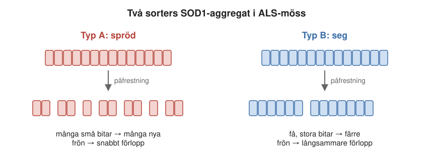
Aggregaten kan föra sjukdomen vidare. När små mängder aggregat från sjuka möss eller från avlidna ALS-patienter sprutades in i ryggmärgen på möss, startade de en ALS-liknande sjukdom. Aggregat av typ A gav nya aggregat av typ A, och typ B gav typ B. Aggregaten förde alltså sin form vidare, precis som prioner. Det liknar hur prionsjukdomar hos djur finns i olika “stammar” med olika förlopp. Fibrer som tillverkats i provrör gav däremot upphov till en helt ny form. Det visar att miljön i kroppen påverkar vilken form aggregaten får, och att det som bildas i ett provrör inte alltid är detsamma som det som bildas i en levande organism.
Försöken handlar om möss och om sjukdomen i ryggmärgen, där forskarna har sprutat in aggregat direkt. De betyder inte att ALS smittar mellan människor, och det finns inget som tyder på det. Men de visar att de felveckade proteinerna kan sprida sig inom nervsystemet på ett prionliknande sätt.
15.10 Varför insjuknar man först vid 50?
En gåta återstår. Den som ärvt en SOD1-mutation har haft det muterade proteinet i sina celler sedan födseln. Ändå blir de flesta sjuka först i femtio- eller sextioårsåldern, och en del blir det aldrig. Samma sak gäller Skelleftesjukan och de ärftliga formerna av Alzheimers sjukdom. Varför tar det så lång tid?
En förklaring är att sjukdomen beror på en balans mellan två faktorer (Figur 15.15). Den ena är hur mycket felveckat protein som bildas. Den andra är cellens förmåga att kompensera: chaperoner, nedbrytning och borttransport av felveckade proteiner. Så länge skyddet räcker märks ingenting. Men med åldern försämras cellernas kvalitetskontroll. Samtidigt växer aggregaten långsamt men exponentiellt. Till slut tippar balansen, och nervcellerna börjar dö.
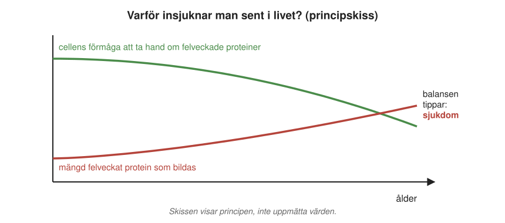
Det exponentiella förloppet förklarar också varför sjukdomen kan pågå länge utan symtom och sedan tycks gå fort. Med ränta på ränta är beloppet länge litet, för att sedan växa snabbt. Det gör det viktigt att förstå de tidiga stegen. Om man kan stabilisera proteinet, minska tillverkningen av det eller hindra fibrerna från att brytas och spridas, kan man kanske skjuta upp sjukdomen. Läkemedlen mot Skelleftesjukan och mot SOD1-formen av ALS visar att sådana vägar redan fungerar delvis. AI-verktyg som kan förutsäga proteiners form (Kapitel 16) är ett nytt hjälpmedel i jakten på fler.
15.11 Sammanfattning
- Vid Alzheimers sjukdom, Parkinsons sjukdom, ALS, prionsjukdomar och Skelleftesjukan veckas ett protein fel och klumpar ihop sig, ofta till långa amyloida fibrer.
- Veckning och felveckning drivs av samma krafter. Oveckade kedjor med öppna vattenskygga delar kan fastna i varandra i stället för att vecka sig rätt. Cellens skyddssystem tar hand om det mesta.
- Fibrer bildas efter en fördröjning men växer sedan exponentiellt, eftersom varje gång en fiber bryts bildas två nya växande ändar. Färdiga fibrer kan fungera som frön.
- Prioner är felveckade proteiner som omvandlar normala proteiner till sin egen form och kan smitta, till exempel via mat (galna ko-sjukan) eller rituella måltider (kuru).
- Vid ALS med SOD1-mutation avgör mängden oveckat SOD1 hur snabbt sjukdomen går. Aggregaten finns i olika former, och de spröda formerna sprider sig snabbast.
- Sjukdomarna debuterar ofta sent eftersom cellens skydd avtar med åldern medan aggregaten långsamt växer.
- Kunskap om proteinernas stabilitet har lett till behandlingar som stabiliserar proteinet eller minskar tillverkningen av det. De kan bromsa några av sjukdomarna, men ingen av dem botar.
15.12 Nyckelbegrepp
- felveckning – När en proteinkedja viker sig fel och i stället för att bli ett fungerande protein klumpar ihop sig med andra kedjor.
- amyloid – Långa, tunna och mycket stabila proteinfibrer, där tusentals kedjor ligger staplade som platta band. Finns vid bland annat Alzheimers sjukdom och prionsjukdomar.
- plack – En stor ansamling av amyloida fibrer i vävnaden, till exempel mellan nervcellerna vid Alzheimers sjukdom.
- ympning – När färdiga fiberbitar, frön, tillsätts och får nya fibrer att växa utan fördröjning (eng. seeding).
- fragmentering – När fibrer bryts av. Varje bit får nya ändar som kan växa, vilket gör att mängden fibrer ökar exponentiellt.
- amyloid-beta (Aβ) – En bit av proteinet APP, omkring 40 aminosyror lång, som klipps ut från nervcellernas membran och bildar placken vid Alzheimers sjukdom.
- tau – Ett protein som normalt stabiliserar nervcellernas inre skelett, men som vid Alzheimers sjukdom bildar nystan inuti nervcellerna.
- α-synuklein – Ett litet protein i nervcellerna som klumpar ihop sig i Lewykroppar vid Parkinsons sjukdom.
- prion – Ett felveckat protein som kan omvandla normala exemplar av samma protein till sin egen form och därmed föröka sig och smitta.
- PrP – Prionproteinet, som normalt sitter på nervcellernas yta. Den felveckade, sjukdomsframkallande formen kallas prion.
- Creutzfeldt-Jakobs sjukdom – Den vanligaste prionsjukdomen hos människa. Mycket sällsynt; den uppstår oftast utan känd orsak.
- transtyretin (TTR) – Ett protein från levern som transporterar sköldkörtelhormon och A-vitamin i blodet. En mutation i TTR orsakar Skelleftesjukan.
- ALS – Amyotrofisk lateralskleros, en sjukdom där de nervceller som styr musklerna (motorneuronen) dör, så att musklerna försvagas och förtvinar.
- motorneuron – En nervcell i hjärnan eller ryggmärgen som skickar signaler till kroppens muskler.
- stam (av aggregat) – En bestämd form av proteinaggregat som förs vidare när aggregatet sprider sig. Olika stammar kan ge olika snabba sjukdomsförlopp.
- transgen mus – En mus som fått en främmande gen, till exempel mänskligt SOD1 med en ALS-mutation, för att forskare ska kunna studera en sjukdom.
15.13 Testa dig själv
Flervalsfrågor
Välj ett svar och tryck på Rätta. Svarsalternativen visas i ny ordning varje gång.
Fundera vidare
15.1 Förklara med egna ord hur en liten mängd prioner kan omvandla stora mängder normalt protein.
15.2 Läkemedlet mot Skelleftesjukan binder till transtyretin och gör det stabilare. Varför kan det hjälpa? Koppla till begreppet stabilitet.
15.3 Vilka faktorer påverkar hur lätt SOD1 klumpar ihop sig, och hur hänger de ihop med ALS-mutationerna?
15.4 Försöken med ALS-möss visar att aggregat kan föras vidare genom injektion. Betyder det att ALS smittar? Resonera.
Hjälp oss att förbättra kapitlet
Hittade du ett fel, eller något som var svårt att förstå? Skicka ett förslag i förslagsformuläret (kräver inloggning med SU-konto). Lärarna läser alla förslag inför nästa version av boken.
15.14 Läs mer
- Amyotrofisk lateralskleros, Alzheimers sjukdom, Parkinsons sjukdom och Prion på svenska Wikipedia.
- Kuru på engelska Wikipedia, med sjukdomens historia och källor. Collinge m.fl., “Kuru in the 21st century – an acquired human prion disease with very long incubation periods”, The Lancet 367:2068 (2006), om de sista fallen.
- Skelleftesjukan (ärftlig transtyretinamyloidos) på svenska Wikipedia.
- Amyloids och Prions, Molecule of the Month på PDB-101 (på engelska), med bilder av David S. Goodsell.
- Nobelpriset i fysiologi eller medicin 1997, till Stanley Prusiner för upptäckten av prioner (på engelska).
- Amyloid på engelska Wikipedia, om hur amyloida fibrer är uppbyggda.